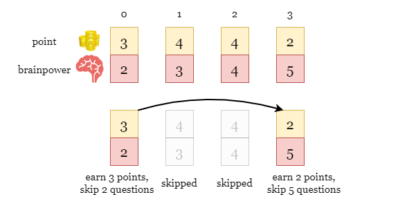
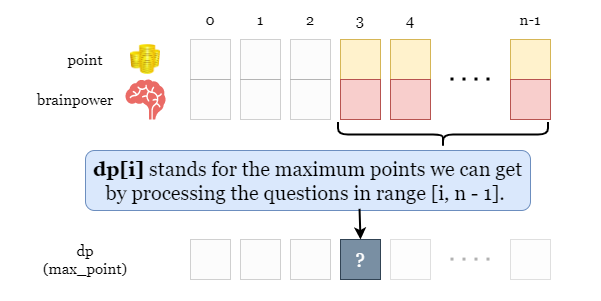
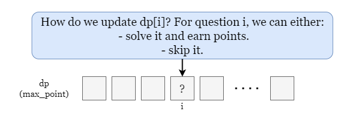
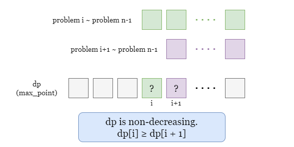
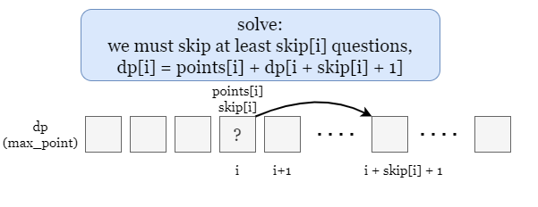
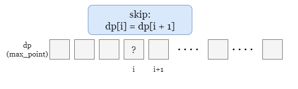
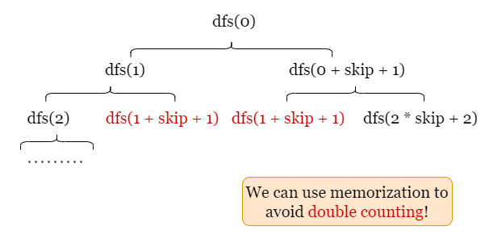

1 / 6
First, we provide an example in the picture below. Note that questions[0] = [points_0, brainpower_0] = [3,
2], so if we solve the first question, we can earn 3 points and have to skip at least
2 following questions.

For each question questions[i], we have two options:
Both choices affect the options on the remaining questions. This distinctive feature implies that we can use dynamic programming.
Let n be the number of questions. Define an array dp where dp[i] is the
maximum points we can get by processing the questions in the suffix subarray questions[i ~ n - 1], as
shown in the colored cells in the picture below.

Now we try to fill dp backward. What is the value of dp[i]? Recall the two options we have
for questions[i], we can either solve it or skip it.

Notice the non-decreasing feature of dp, that is, dp[i] ≥ dp[i + 1], (For i < n - 1).
The reason is that:
dp[i] is the optimal points we get for questions[i ~ n - 1].dp[i + 1] is the optimal points we get for questions[i + 1 ~ n - 1], which has one
less question than questions[i ~ n - 1].
In short, the question range for dp[i] includes the question range for dp[i + 1], so we can
always have at least the same points as dp[i + 1] for dp[i].

Now we can update each cell. For dp[i], if we solve this problem, it means that we have to skip the
following skip[i] questions. Therefore, the maximum points we can get is determined by:
i, which is points[i].dp[i + skip[i] + 1 ~ n], since we have to skip at least
skip[i] following questions.
You may wonder why we use dp[i + skip[i] + 1] if we don't necessarily have to solve question
i + skip + 1. What if we actually skipped more questions?
We have showed that
dpis non-increasing, thusdp[i + skip[i] + 1]is the maximum value in the rangedp[i + skip[i] + 1 ~ n]. We can safely usedp[i + skip[i] + 1]as the maximum points we can get among all possible plans, regardless of whether we solvei + skip[i] + 1.
Therefore, by solving the problem i, we have the maximum points as points[i] + dp[i + skip[i] +
1].

On the other hand, if we skip problem i, the maximum points we get is the same as the case for i +
1. That is, dp[i] = dp[i + 1].

To sum up, we can update dp[i] as the larger of the points of the two options:
dp[i] = max(dp[i + 1], points[i] + dp[i + skip[i] + 1]).
Note the boundary condition: If i + skip[i] + 1 >= n, it means that after skipping
skip[i] questions, there are no more available questions or gainable points, so we can just treat
dp[i + skip[i] + 1] as 0.
Finally, we just need to return dp[0] after the update ends, which stands for the optimal solution for
the whole question array questions[0 ~ n - 1]. Please take the following slides as an example.
Initialize an array dp of size n, set dp[n - 1] = questions[n - 1][0].
Iterate backward over index i from n - 2:
i, we have dp[i] = dp[i + 1].i, we have dp[i] = questions[i][0] + dp[i + questions[i][1] +
1].
Update dp[i] as the larger one.
Return dp[0] once we finish the iteration.
Java
class Solution {
public long mostPoints(int[][] questions) {
int n = questions.length;
long[] dp = new long[n];
dp[n - 1] = questions[n - 1][0];
for (int i = n - 2; i >= 0; --i) {
dp[i] = questions[i][0];
int skip = questions[i][1];
if (i + skip + 1 < n) {
dp[i] += dp[i + skip + 1];
}
// dp[i] = max(solve it, skip it)
dp[i] = Math.max(dp[i], dp[i + 1]);
}
return dp[0];
}
}
Python3
class Solution:
def mostPoints(self, questions: List[List[int]]) -> int:
n = len(questions)
dp = [0] * n
dp[-1] = questions[-1][0]
for i in range(n - 2, -1, -1):
dp[i] = questions[i][0]
skip = questions[i][1]
if i + skip + 1 < n:
dp[i] += dp[i + skip + 1]
# dp[i] = max(solve it, skip it)
dp[i] = max(dp[i], dp[i + 1])
return dp[0]
Let nn
be the length of the input array questions.
Time complexity: O(n)O(n)
dp. At each step, we calculate and update dp[i] which
take O(1)O(1) time.
Space complexity: O(n)O(n)
n.We will implement the same algorithm as in approach 1, but using a recursive method.
The idea is that each time a recursive function calls itself, it reduces the given problem into subproblems. The recursion call continues until it reaches the base cases, where the subproblem can be solved without further recursion.
We define dfs(i) as the maximum points we can get by processing the problems in the range [i ~ n -
1]. Similar to approach 1, we have the same recursive formula where dfs(i) is the larger of the
points of the two options:
dfs(i) = max(dfs(i + 1), points[i] + dfs(i + skip[i] + 1))
Once we move on from dfs(i) to either dfs(i + 1) or dfs(i + skip[i] + 1). Then
the function calls itself for smaller subproblems. When we meet the case that i ≥ n, we have reached
the base case where the problem can be solved by just returning 0 without further recursion!
As you may have noticed from the picture, there may be many repeated calls to dfs. To avoid repeated
computation over the same case, we can use an array dp as memory.

dp of size n as memory.dfs(i) as the maximum points in the range [i ~ n - 1].
i >= n, return 0, since we can get 0 points from
0 question.
dp[i] != 0, it means we have already computed dfs(i), return
dp[i].
i or skip it.
questions[i][0] + dfs(i + questions[i][1] + 1).
dfs(i + 1).dp[i] as the larger one.dfs(0) and return its result.
Java
class Solution {
long dp[];
private long dfs(int[][] questions, int i) {
if (i >= questions.length) {
return 0;
}
if (dp[i] != 0) {
return dp[i];
}
long points = questions[i][0];
int skip = questions[i][1];
// dp[i] = max(skip it, solve it)
dp[i] = Math.max(points + dfs(questions, i + skip + 1), dfs(questions, i + 1));
return dp[i];
}
public long mostPoints(int[][] questions) {
int n = questions.length;
dp = new long[n];
return dfs(questions, 0);
}
}
Python3
class Solution:
def mostPoints(self, questions: List[List[int]]) -> int:
n = len(questions)
dp = [0] * n
def dfs(i):
if i >= n:
return 0
if dp[i]:
return dp[i]
points, skip = questions[i]
# dp[i] = max(skip it, solve it)
dp[i] = max(dfs(i + 1), points + dfs(i + skip + 1))
return dp[i]
return dfs(0)
Let nn
be the length of the input array questions.
Time complexity: O(n)O(n)
Recall the picture at the beginning of this approach, the time complexity is proportional to the
number of the function calls. Since we use dp as memory, each dfs(i) will
be called exactly once, so the time complexity is O(n)O(n).
Space complexity: O(n)O(n)
dp of size n which also takes O(n)O(n) space.